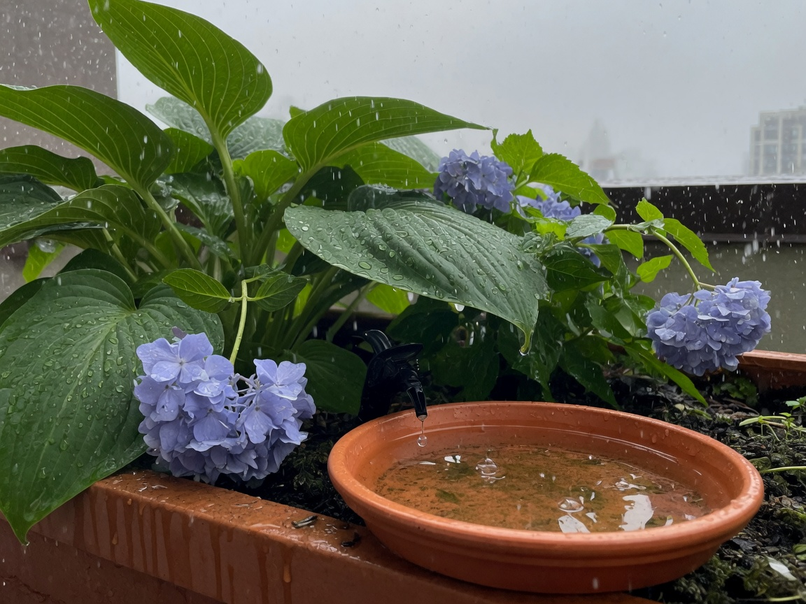
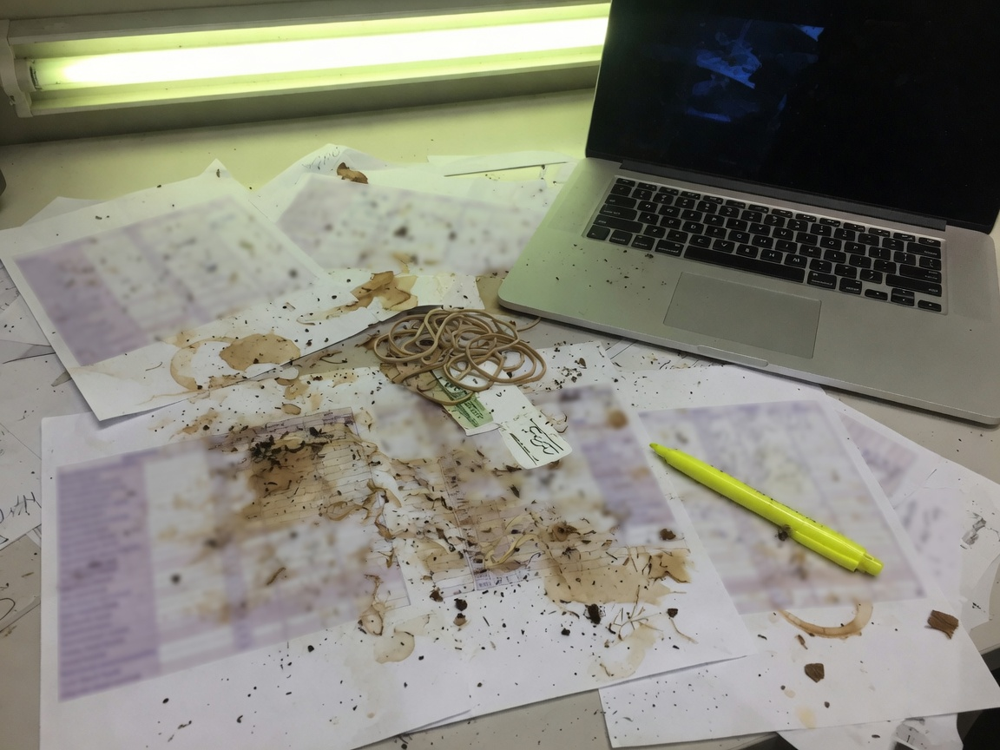

sun and rain
town & gardens, march 2024 – august 2025. also: how I learned what a system is.

not a client roof. the kind of place the work lived.
Town & Gardens designs, builds, and maintains landscapes in New York City — rooftops, terraces, townhouses, the outdoor rooms that only work if someone is thinking about them every week. I was operations and client engagement. Two hundred-plus Manhattan accounts. Three hundred service contracts. A crew of three. The title sounds like an office. The job was a system with weather in it.
The production schedule is the sky. A heat week in July is not a vibe. It is a load. Rain is not a day off. It is a constraint that moves every route, every plant sitting in a nursery, every client who wants the terrace done before the weekend. You do not get to treat the environment as a backdrop. The environment is the other manager.
I owned the loop between the roof and the office. Proposals. Design meetings. Retention. Escalations. Routing. Which three people go where, in what order, with what material, given what the week is doing. Urgent versus recurring. A leak on a terrace over a living room is not the same priority as a spring start-up — except when the client who needs the start-up is also the one whose board meeting is on the roof Thursday.
That is project management. It is also systems management. The plants are a production system. The irrigation is a production system. The crew is a production system. The CRM-in-all-but-name — the spreadsheets, the calls, the I'll be there at 7 — is a production system. If any one of them desyncs, something dies, or someone important gets a photo of a brown boxwood, which in this business is the same event.

rain is an input. so is a clogged dripper. so is a client text.
I came up as a technician. Conserva Irrigation, 2021 to 2023: I was the #1 selling tech of five, installing and upselling smart / Wi-Fi systems, 95% on-time. I still work on roofs — Rooftop Drops, March 2026 to now — because I do not think you should manage a system you cannot put your hands on. Blue collar is not a brand I am applying to a resume. It is how the work starts. You learn which valve is lying. You learn that the controller says it's watering is not the same as water in the soil. You learn that clients do not buy irrigation. They buy not thinking about irrigation.
The office half is the part people skip when they romanticize trades. Someone has to write the proposal so the number is real. Someone has to tell a crew of three that we are not doing the Upper East Side and Dumbo in the same morning just because both clients texted. Someone has to take the call when a planter is draining into a penthouse and translate panic into a sequence: shutoff, protection, cause, fix, follow-up, who pays. That is operations. That is also customer support, sales, and incident response.

the other half of the system. fluorescent, stained, true or it isn't.
Sun and rain are not metaphors I invented for a job site. They were the actual operating conditions. A smart controller is a model of the weather. The soil is the eval. If those two disagree, you believe the soil, then you go find why the model lied — a clogged filter, a zone mapped wrong, a sensor in a courtyard that never sees rain, a person who turned it off and didn't say. That loop is the whole job. It is also, later, how I think about agents.
I am writing this because I am applying to rooms full of people who talk about systems. Most of them met systems in software. I met them in weather. The discipline is the same: inputs you do not control, outputs you are accountable for, a loop you have to keep closed, and a team that only works if the information is true.